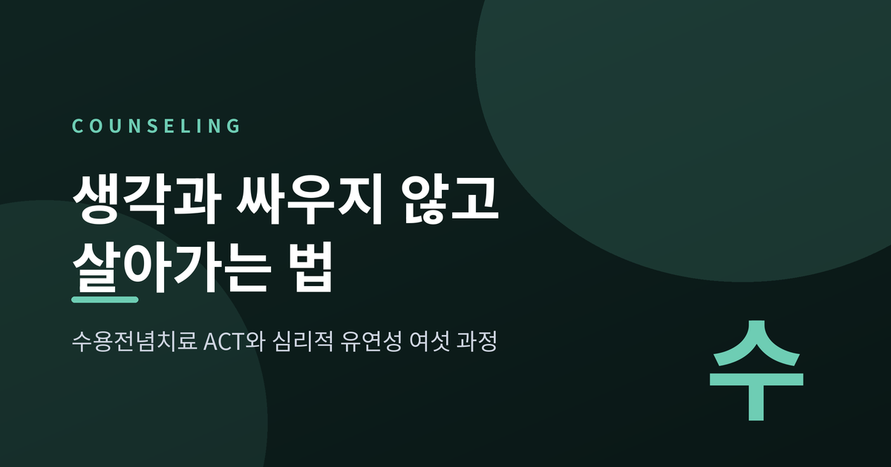
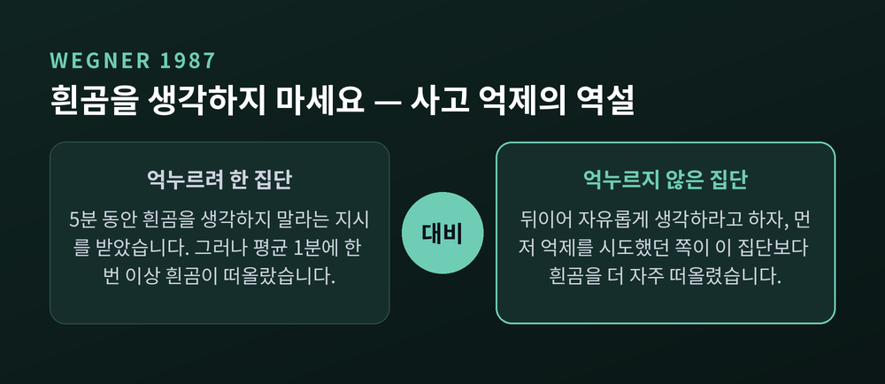
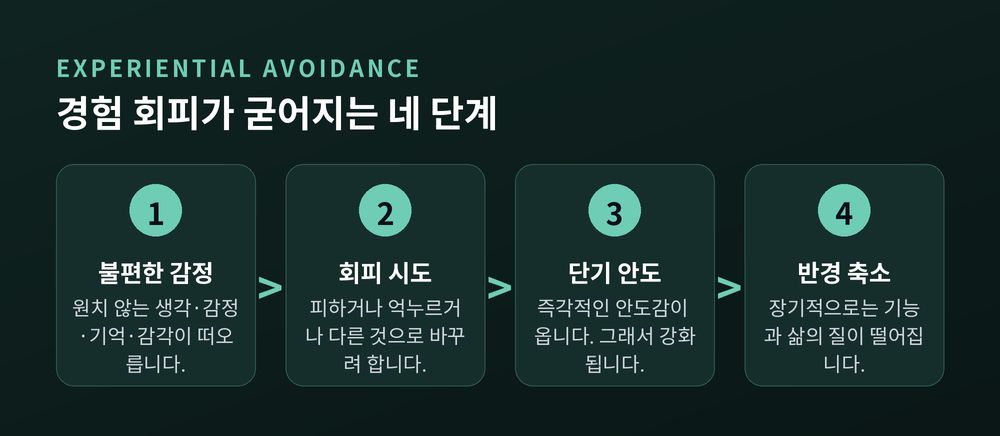
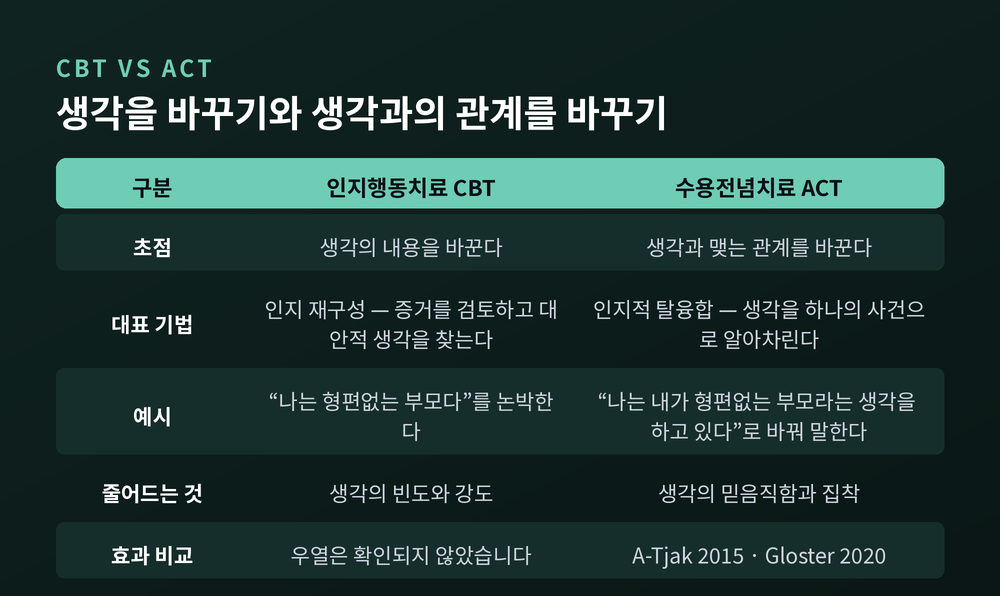
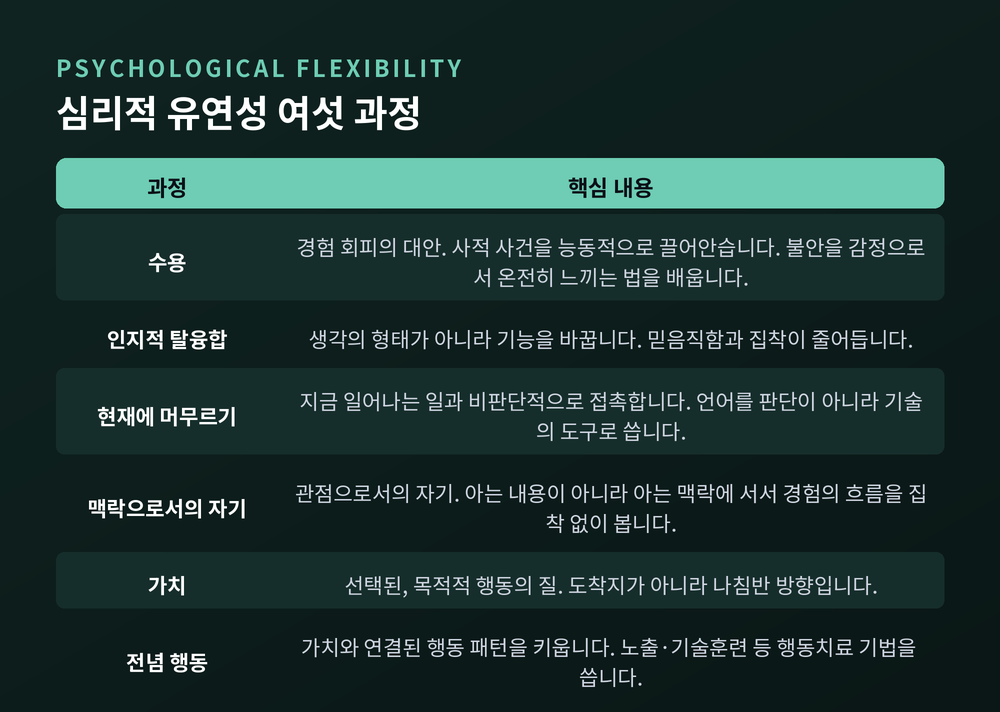
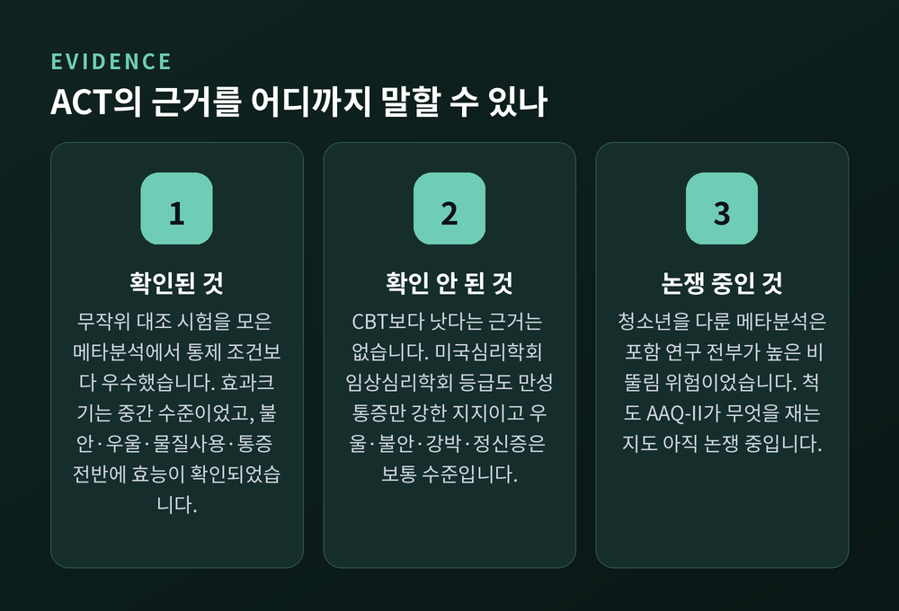

이번 글에서는 수용전념치료(ACT)를 정리해 보겠습니다. 생각을 바꾸는 대신 생각과의 관계를 바꾸자고 말하는 접근입니다. 원리와 여섯 가지 과정, 그리고 근거가 어디까지 확인되었는지까지 함께 살펴보겠습니다.
먼저 세 줄로 요약합니다.

수용전념치료는 스티븐 헤이즈, 커크 스트로살, 켈리 윌슨이 정립한 접근입니다. 흔히 ACT라고 줄여 부릅니다.
이 접근의 출발점은 조금 낯섭니다. 고통과 상실과 슬픔은 인간의 삶에서 피할 수 없는 정상적인 일부라는 전제입니다.
즉 괴로움이 있다는 것은 무언가 고장 났다는 신호가 아닙니다.
문제는 그다음에 벌어집니다. 대부분의 사람은 이런 믿음을 안고 상담실 문을 엽니다. "좋은 삶을 살려면 내 기분을 통제해야 한다. 원치 않는 생각과 감정을 없애고 더 나은 것으로 바꿔야 한다."
ACT는 이것을 통제 어젠다라고 부릅니다. 그리고 감정을 습관적으로 통제하려는 시도가 오히려 괴로움을 늘리는 경우가 매우 잦다고 봅니다.
헤이즈는 이 지점을 다루는 작업에 창조적 절망감이라는 이름을 붙였습니다. 이름이 무겁지만 뜻은 다릅니다. 삶에 절망하라는 말이 아닙니다. 지금까지 써온 통제 전략들과 그것이 삶에 남긴 결과를 가까이서 들여다보자는 제안입니다.
'창조적'이라는 말은 그 뒤에 열리는 자리를 가리킵니다. 불필요한 통제를 내려놓았을 때, 비로소 자기가 선택한 가치대로 살아가는 쪽으로 주의를 돌릴 여지가 생긴다는 것입니다.
여기서 자주 인용되는 실험이 있습니다. 대니얼 웨그너 연구팀이 1987년 『성격 및 사회심리학 저널』에 발표한 연구입니다.
절차는 단순합니다. 참가자에게 5분 동안 떠오르는 생각을 그대로 말하게 했습니다. 단 한 가지 지시를 덧붙였습니다. "흰곰을 생각하지 마세요." 흰곰이 떠오르면 종을 울리게 했습니다.
결과는 지시와 정반대였습니다. 참가자들은 평균적으로 1분에 한 번 이상 흰곰을 떠올렸습니다.
더 흥미로운 것은 그다음이었습니다. 이어지는 5분 동안 이번에는 "흰곰을 생각하세요"라고 지시했습니다. 그러자 앞서 억제를 시도했던 집단이, 처음부터 그냥 생각하라고 한 집단보다 흰곰을 더 많이 떠올렸습니다.
억누른 생각이 더 세게 되돌아온 것입니다.

웨그너는 1994년 『심리학 리뷰』에서 이를 아이러니 과정 이론으로 설명했습니다. 마음에는 두 과정이 동시에 돌아간다는 것입니다.
하나는 의도적 과정입니다. 원치 않는 생각을 억누르려고 다른 데로 주의를 돌리는 의식적 노력입니다.
다른 하나는 자동적 과정입니다. 그 생각이 떠오르는지 감시하는 무의식적 기제입니다. 그런데 감시하려면 그 개념을 마음에 떠올려야만 합니다.
감시하는 행위가 곧 그 생각을 붙잡아 두는 셈입니다.
이 역효과는 스트레스나 시간 압박이 있을 때, 머리가 이미 복잡할 때 더 강하게 나타납니다. 통제에 쓸 정신적 여력이 줄어들수록 역효과는 커집니다.
ACT는 이런 시도들을 묶어 경험 회피라고 부릅니다. 원치 않는 생각, 감정, 기억, 신체 감각을 피하거나 억누르거나 바꾸려는 노력입니다.
형태는 다양합니다. 불편한 감정을 부를 만한 상황을 피하는 것. 무언가에 몰두해 감각을 무디게 만드는 것. 감정을 아예 차단해 버리는 것.
여기에 이 개념의 핵심이 있습니다. 회피는 실패해서 반복되는 것이 아닙니다. 단기적으로는 확실히 안도감을 주기 때문에 반복됩니다.
그러나 장기적으로는 기능 저하와 삶의 질 감소로 이어집니다. 잠깐의 안도를 살 때마다 삶의 반경이 조금씩 줄어드는 구조입니다.

경직된 경험 회피의 악영향은 한 가지 진단에만 국한되지 않습니다. 우울장애, 불안장애, 강박장애, 물질사용장애, 섭식장애, 외상후스트레스장애에 걸쳐 공통적으로 관찰됩니다. 그래서 범진단적 요인으로 다뤄집니다.
두 번째 열쇳말은 인지적 융합입니다.
길랜더스 연구팀은 2014년 『행동치료』에 실은 논문에서 이를 이렇게 정의했습니다. 자신의 생각, 평가, 판단, 기억에 얽혀 들어가 그 내용에 따라 행동하게 되는 언어적 과정입니다.
쉽게 말하면 이렇습니다. 생각을 얼마나 문자 그대로 믿는가의 문제입니다.
"나는 형편없다"는 생각이 떠올랐다고 해봅시다. 융합된 상태에서는 이것이 마음에서 일어난 하나의 사건이 아니라 나에 대한 사실 보고서가 됩니다. 그리고 사실 보고서를 받으면 사람은 그에 맞게 행동합니다.
ACT가 제안하는 대안은 탈융합입니다. 여기서 방향이 중요합니다.
탈융합은 생각의 형태나 빈도를 바꾸려 하지 않습니다. 생각이 갖는 기능을 바꾸려 합니다.
방법은 여러 가지입니다. 그 생각을 거리를 두고 담담히 바라보기. 소리만 남을 때까지 소리 내어 반복하기. 생각에 모양이나 색이나 속도를 부여해 바깥에서 관찰되는 사건처럼 다루기. "흥미로운 생각을 줘서 고맙다"고 자기 마음에게 인사하기.
가장 널리 알려진 것은 이름 붙이기입니다. "나는 형편없다"가 아니라 "나는 내가 형편없다는 생각을 하고 있다"라고 말해보는 것입니다.
한 마디가 덧붙었을 뿐인데 생각하는 나와 생각 사이에 공간이 생깁니다.
여기서 꼭 짚어야 할 대목이 있습니다. 탈융합의 결과는 대개 그 생각의 빈도가 즉시 줄어드는 것이 아닙니다. 그 생각의 믿음직함과 집착이 줄어드는 것입니다.
생각은 그대로 떠오릅니다. 다만 그 생각이 나를 끌고 가는 힘이 약해집니다.
이 지점에서 인지행동치료, 즉 CBT와의 차이가 드러납니다.
CBT의 인지 재구성은 생각의 내용을 바꾸는 데 초점을 둡니다. ACT의 탈융합은 생각과의 관계를 바꾸는 데 초점을 둡니다.
"나는 형편없는 부모다"라는 생각을 예로 들면 이렇습니다. CBT라면 그 생각을 논박합니다. 증거를 검토하고 대안적인 생각을 찾습니다. ACT라면 그것을 그저 하나의 생각으로 알아차리도록 권합니다. 궁극적 진실이 아니라.

이런 차이가 나온 배경에는 이론이 있습니다. ACT는 관계구성틀이론이라는 언어에 관한 기초 과학에서 자랐습니다. 인간이 언어로 관념들을 어떻게 연결하는지, 그 연결이 왜 행동을 지배하게 되는지를 다루는 이론입니다.
언어가 생각에 힘을 주는 것이라면, 지렛대는 논쟁에서 이기는 데 있지 않습니다. 그 힘을 느슨하게 하는 데 있습니다.
다만 오해는 피해야겠습니다. ACT는 CBT와 단절된 접근이 아닙니다. 제3의 물결 행동치료로 분류되며, 전념 행동 단계에서는 노출이나 기술 훈련 같은 전통적 행동치료 기법을 그대로 끌어다 씁니다. 뒤에서 보겠지만 효과 면에서도 두 접근의 우열은 확인되지 않았습니다.
예전에는 어느 쪽이 옳은가를 따졌습니다. 지금은 어느 쪽이 이 사람에게 작동하는가를 봅니다.
ACT의 목표는 증상 제거가 아닙니다. 심리적 유연성입니다.
맥락행동과학회는 이를 이렇게 정의합니다. 의식 있는 인간으로서 현재 순간에 더 온전히 접촉하고, 그렇게 하는 것이 자기가 선택한 가치에 기여할 때 행동을 바꾸거나 지속하는 능력입니다.
이 유연성은 여섯 가지 과정으로 이뤄집니다. 눈여겨볼 점은 이 여섯이 병리를 피하는 방법이 아니라 길러야 할 긍정적 기술로 개념화된다는 것입니다.

여섯은 다시 두 묶음으로 나뉩니다.
수용, 탈융합, 현재 순간과의 접촉, 맥락으로서의 자기 — 이 넷은 마음챙김과 수용의 과정입니다. 학회는 이 네 과정이 곧 마음챙김의 실용적 정의를 제공한다고 설명합니다.
현재 순간과의 접촉, 맥락으로서의 자기, 가치, 전념 행동 — 이 넷은 전념과 행동 변화의 과정입니다.
두 목록이 겹칩니다. 현재 순간과의 접촉, 맥락으로서의 자기는 양쪽 모두에 들어갑니다. 의식 있는 인간의 모든 심리 활동이 '지금'을 통과하기 때문입니다.
여섯 중에서 가장 자주 오해받는 것이 가치입니다.
ACT에서 가치는 선택된, 목적적 행동의 질입니다. 대상처럼 손에 넣을 수는 없지만 순간순간 구현할 수 있는 것입니다.
핵심은 '선택'입니다. ACT는 가족, 직업, 영성 같은 영역에서 삶의 방향을 스스로 고르도록 돕습니다. 동시에 다른 데서 온 목소리는 약화시킵니다. "나는 이것을 가치 있게 여겨야 해." "좋은 사람이라면 저것을 중요하게 생각하겠지." "어머니가 그걸 원하시니까."
회피나 사회적 순응이나 융합에서 나온 선택은 가치가 아니라고 봅니다.
가치는 도착할 수 있는 목적지가 아닙니다. 늘 그쪽으로 움직일 수 있는 나침반 방향입니다.
그리고 전념 행동이 그 여정의 발걸음입니다. 가치가 '왜'라면 전념 행동은 '어떻게'입니다. 가치와 달리 구체적 목표는 달성할 수 있고, ACT는 거의 항상 단기·중기·장기 목표와 연결된 과제를 포함합니다.
여기서 순서가 뒤집힙니다. 수용과 탈융합은 그 자체가 목적이 아닙니다. 학회의 표현을 그대로 옮기면, 이들은 더 생기 있고 가치에 부합하는 삶으로 가는 길을 치우는 작업입니다.
불안을 없애야 살아갈 수 있는 것이 아닙니다. 불안을 데리고도 살아갈 수 있는 것입니다.
여기서 균형을 잡아야겠습니다. 좋은 이야기만 하고 끝내면 정직하지 않습니다.
먼저 확인된 것부터 봅니다.
아트약 연구팀은 2015년 『심리치료와 심신의학』에 메타분석을 발표했습니다. 무작위 대조 시험 39편, 환자 1,821명 규모입니다. ACT는 통제 조건보다 우수했고 효과크기는 헤지스 g로 0.57이었습니다. 삶의 만족과 삶의 질에서는 0.37, 과정 측정치에서는 0.56이었습니다. 0.57은 통상 중간 수준으로 해석되는 크기입니다.
글로스터 연구팀은 2020년 『맥락행동과학 저널』에서 메타분석 20편을 다시 검토했습니다. 통제된 효과크기 100개, 총 12,477명 규모입니다. 결론은 ACT가 불안, 우울, 물질사용, 통증, 범진단 집단 등 검토된 모든 조건에서 효능이 있었다는 것이었습니다.
최근 자료도 있습니다. 2023년 『프론티어스 인 사이콜로지』에 실린 암 환자 대상 메타분석은 RCT 16편, 711명을 분석해 치료 직후 불안에서 표준화 평균차 -0.41, 우울에서 -0.45, 심리적 유연성에서 -0.81의 결과를 보고했습니다.
이제 한계입니다.

첫째, CBT보다 낫다는 근거는 없습니다. 아트약 연구팀의 분석에서 ACT와 기존 확립된 치료의 비교는 유의한 차이를 보이지 않았습니다. p값은 0.140이었습니다. 글로스터 연구팀도 ACT가 대부분의 활성 개입보다 우수했다고 하면서 CBT는 예외로 두었습니다. 서로 다른 두 분석이 같은 결론에 닿았습니다.
둘째, 미국심리학회 임상심리학회의 등급은 조건마다 다릅니다. 만성통증은 '강한 연구 지지'를 받았지만 우울, 혼합 불안, 강박장애, 정신증은 '보통 수준의 지지'에 머물러 있습니다. 평가된 조건 중 보통을 넘어선 것은 만성통증뿐입니다.
셋째, 연구의 질입니다. 2024년 청소년의 불안·우울을 다룬 메타분석은 포함된 연구가 모두 '높은 비뚤림 위험'으로 평가되었다고 스스로 밝혔습니다.
넷째, 측정 도구를 둘러싼 논쟁이 있습니다. 오랫동안 쓰인 척도 AAQ-II에 대해, 이것이 실은 신경증 성향이나 부정 정서를 재고 있는 것 아니냐는 요인분석 결과가 2014년 『행동치료』에 실렸습니다. 반론도 나와 있습니다. 이 논쟁은 아직 진행 중이며 어느 한쪽으로 정리되지 않았습니다.
정리하면 이렇습니다. ACT는 효과가 확인된 접근입니다. 그러나 다른 근거 기반 치료보다 우월한 접근이라는 증거는 아직 없습니다.
끝으로 한 마디만 더 드리겠습니다.
ACT를 처음 접하면 대개 이런 인상을 받습니다. 참으라는 말인가. 아닙니다. 수용은 체념이 아니고, 탈융합은 무시가 아닙니다.
불안 환자에게 ACT가 가르치는 것은 불안을 이겨내는 법이 아니라, 불안을 감정으로서 온전히, 방어 없이 느끼는 법입니다. 통증 환자에게 가르치는 것은 통증을 없애는 법이 아니라 통증과의 씨름을 놓아주는 법입니다.
싸움을 멈추는 것과 지는 것은 다릅니다.
"생각을 이기려 하지 말고, 생각을 데리고 가고 싶은 곳으로 가십시오."
다만 한 가지는 분명히 해두고 싶습니다. 이 글은 개념을 소개한 것이지 치료가 아닙니다. ACT는 훈련받은 임상가와 함께 진행되는 구조화된 개입이며, 글 몇 줄로 대신할 수 있는 것이 아닙니다. 지금 겪고 계신 어려움이 일상을 흔들 만큼이라면, 정신건강의학과나 심리상담 전문가를 찾아 도움을 받으시길 권합니다. 혼자 버티는 것이 용기는 아닙니다.
머릿속의 흰곰을 쫓아내야 문을 나설 수 있냐고 물으신다면, 그렇지 않다고 답하겠습니다. 흰곰은 데리고 나가도 됩니다.